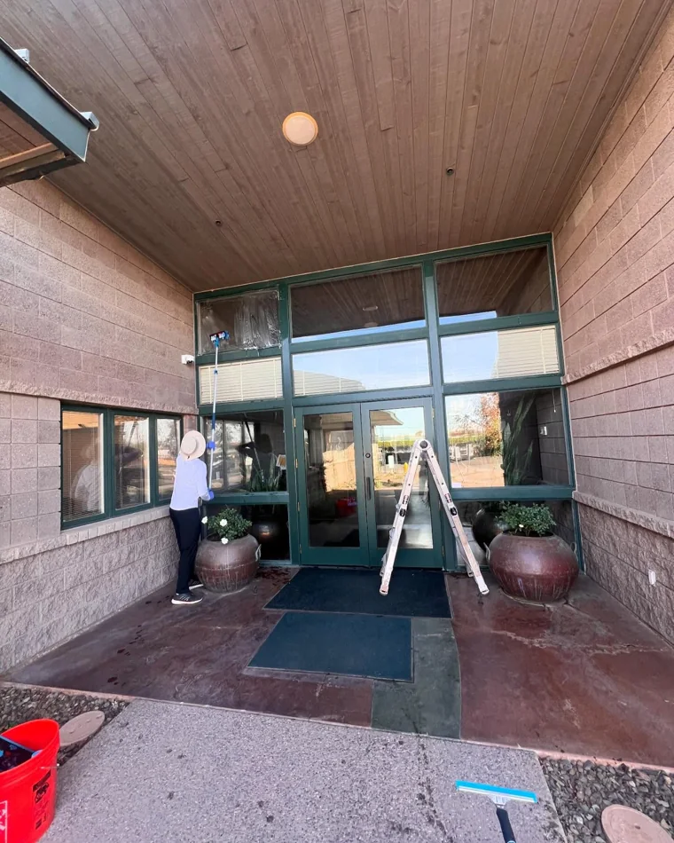
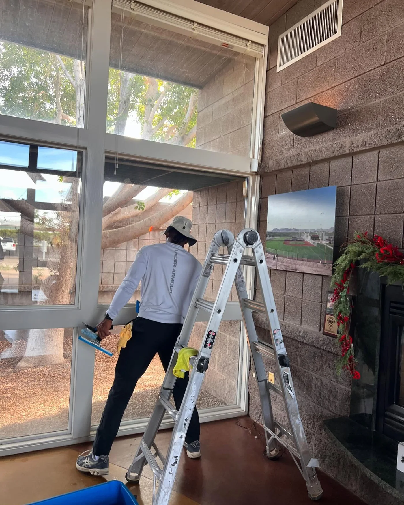
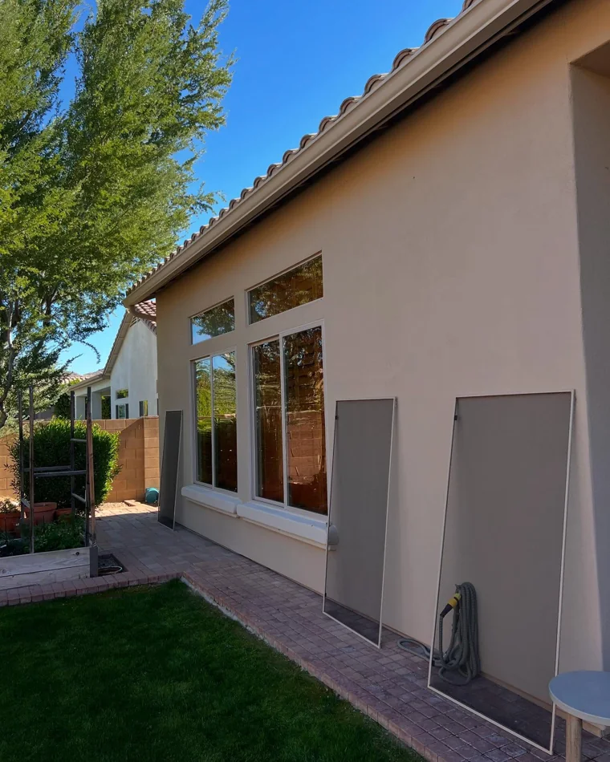
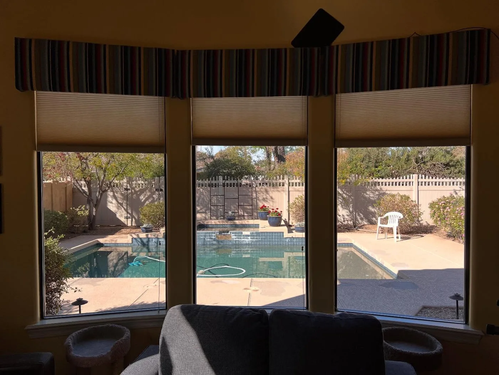
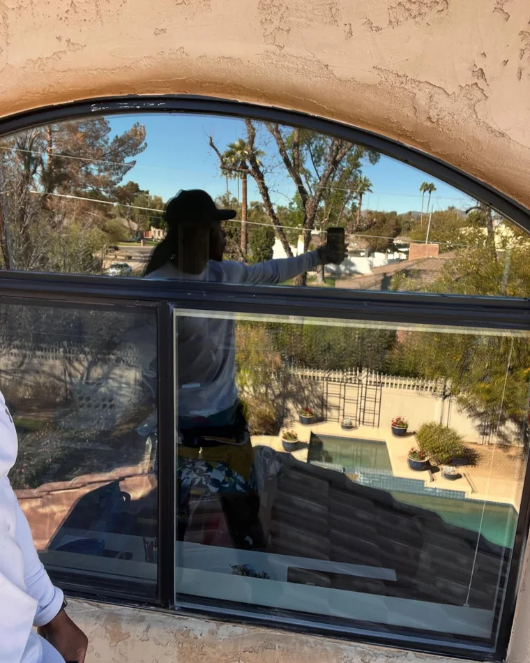
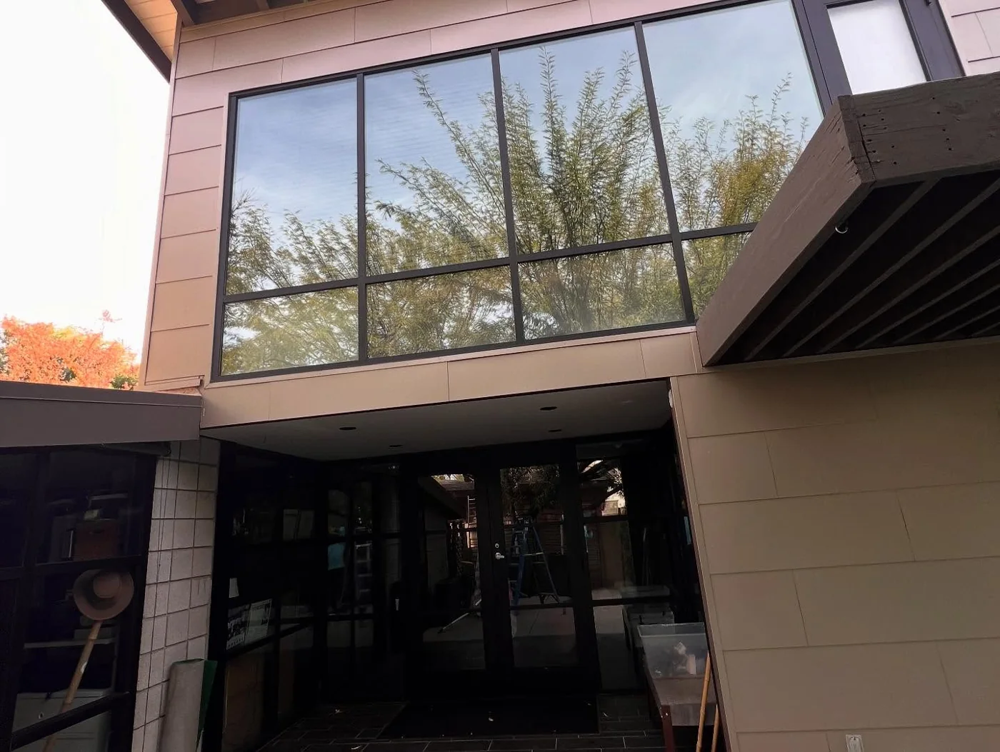
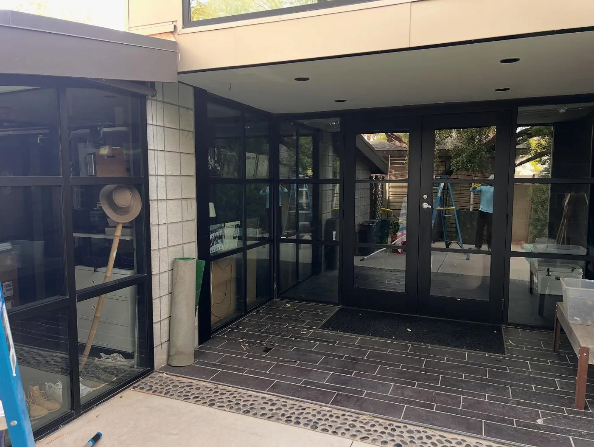

Window Cleaning
Interior and exterior glass, tracks, sills and screens. Water-fed poles for the high panes so nothing dries spotted.
Get a quote →
Purified water-fed poles reach the glass a ladder shouldn't. Window cleaning, pressure washing and gutter care across Phoenix — free estimate before anyone touches a pane.
Get a free estimate →Residential and commercial. One-time or on a schedule. Every quote starts with someone actually coming out to look.

Interior and exterior glass, tracks, sills and screens. Water-fed poles for the high panes so nothing dries spotted.
Get a quote →
Driveways, walkways, patios, pool decks and block walls. Desert dust and hard-water staining off without wrecking the surface.
Get a quote →Debris out, downspouts flushed, and the whole run checked for sag while we're up there. Ahead of monsoon season, not during it.
Get a quote →Drag sideways. Every frame is our own work on a real Phoenix-area property.




Short clips we shot on real jobs around Phoenix — high reaches, estate glass, and the detail pass at the end. Tap a screen to play the reel.
@pane_solutions_llc →Real reviews, quoted as written. Hover to stop the feed.